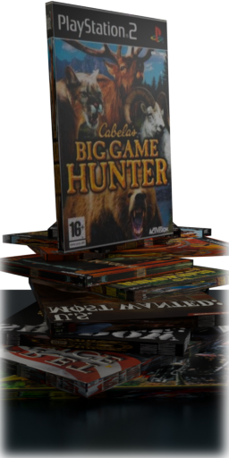
Worked as a 3D programmer on the FUNLabs engine, which was built from scratch as a PC FPS engine and later expanded to support consoles and outdoor environments.
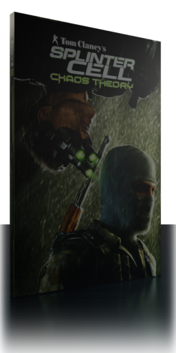
The GameCube version I worked on was a port derived from the PS2 version.
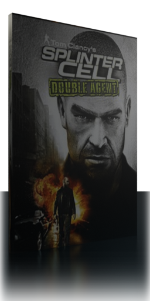
My work focused on the particle system where I implemented particle collision with planes and
ellipsoids to approximate floors and objects. Collision data could be generated within the editor or
dynamically at runtime based on nearby objects such as characters. This allowed gameplay
interactions such as Sam disturbing smoke in certain environments.
The system supported
two collision modes: hard and soft. Soft collision allowed particles to gradually deflect rather
than reflect, producing more natural smoke behavior. On PS2 this simulation ran on VU0 in micro mode
using scratchpad memory and DMA transfers.
I significantly optimized particle performance
by introducing particle spawners and instances, which improved batching efficiency and allowed
reduced simulation rates when appropriate. This also simplified particle authoring workflows for FX
artists.
While the Xbox version used cube maps for ice materials, the PS2 version lacked
this capability. I implemented sphere mapping along with a conversion workflow from cube maps to
sphere maps to improve ice rendering on PS2.
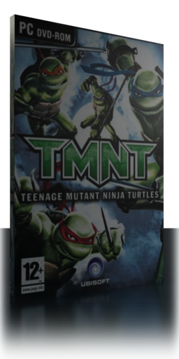
I worked on character lighting, focusing on precomputed subsurface scattering evaluated per vertex using spherical harmonics.
Later, I transitioned from spherical harmonics to zonal harmonics to enable rotation of the lighting solution during skinning. To support all gameplay cases, the lighting solution was implemented both on GPU and in CPU assembly when skinning was active.
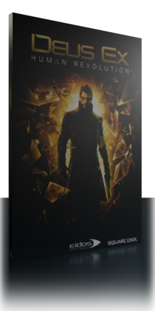
Deus Ex Human Revolution was built on the Crystal Dynamics engine. Early in production the team
decided not to use lightmaps due to potential production complexity. Lighting relied on a forward
rendering approach, which limited the number of lights affecting each object and resulted in
under-lit scenes.
I introduced deferred shading to support a significantly larger number
of dynamic lights per scene. Stencil buffers were used to mark intersections between lights and
scene geometry to reduce computation costs. Most lights were fill lights without shadows, which
worked particularly well with deferred shading. At runtime we frequently had 100–130 visible lights
per frame.
One project I worked on was the implementation of a material blending tool for modeling that
simplified transitions between materials and reduced workload for artists. The resulting output was
also optimized for GPU execution.
I also developed an engine-level rain system that
dynamically affected materials, displayed raindrops and puddles, and applied a post-processing
filter producing rain splatter on silhouettes during heavy rainfall.
Additional work
included real-time radiosity for spot lights using Reflective Shadow Maps optimized for GPU cache
usage, along with ray-marched volumetric fog and motion blur.
I optimized the GBuffer by
compressing normal maps into two channels using spherical coordinates and built several supporting
tools.
Internally, I delivered presentations to help content creators understand the
engine pipeline, how production scenarios affect texture streaming memory, and how to use it
efficiently. I also organized Jeux d'enfants internal sessions where developers shared projects and
games that inspired them.
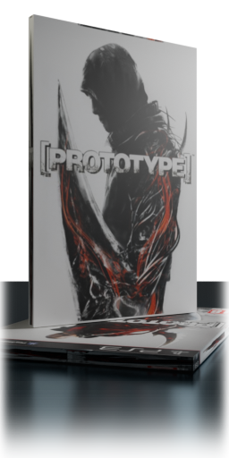
Prototype 1 and 2 were remastered for PS4 and Xbox One, including asset improvements and several
new technical features.
I implemented volumetric SSAO for Prototype 1, generating normals
directly from the depth buffer.
I also implemented soft contact shadows using cone
tracing against ellipsoids attached to characters to approximate their geometry. During research I
evaluated several techniques including directional ambient capture stored in a volumetric spherical
harmonics texture before settling on cone tracing.
Additionally, I contributed
improvements to the time-of-day system and enhanced environment specular
reflections.
Other work included visual polishing of picked-up objects using layered
blurred transparency.
The Angry Birds port to Wii/WiiU combined the Angry Birds trilogy into a single game along with new
features such as dynamic backgrounds.
As producer overseeing the port, I worked closely
with Rovio and Activision on planning, custom input schemes, achievements, UI updates, and physical
and rendering optimizations.
The project was delivered on schedule and within budget.
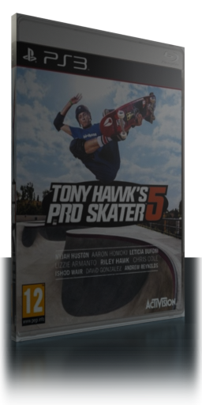
Tony Hawk's Pro Skater 5 was a down-port to PS3 and Xbox 360 from the PS4/Xbox One/PC version being developed concurrently.
I led a four-person team responsible for adapting the content to PS3 and Xbox 360, focusing
on memory constraints and performance optimization.
We simplified collision data from
complex collision meshes to custom simplified shapes, removed one level and updated blueprint logic
accordingly, configured texture streaming, and in one case implemented dynamic content
loading.
The project shipped on time and within scope.
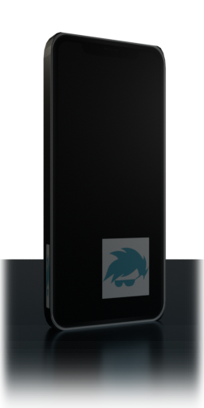
T-Me Studios maintained a portfolio of approximately 3000 Android applications including launchers,
keyboards, themes and screen savers, generating around 30 million new users per month.
I
worked as a core programmer focusing on Android applications, UI systems, View-Model architecture,
and related infrastructure.
My work included implementing water simulation for screen
savers using a Verlet integrator with OpenGL ES, consolidating launchers and themes into a unified
application, building cross-promotion systems for the theme portfolio, and designing user journey
analytics with AWS Kinesis combined with epsilon-greedy strategies to optimize content
recommendations. I also contributed to the publishing platform used across the entire portfolio.
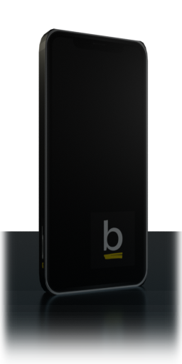
Basmo was an Android and iPhone application designed to assist users in reading and organizing
books.
Key ideas from books could be captured directly by scanning pages via OCR or by
using voice-to-text input.
Visually styled quotes could be generated similarly to
Instagram quote formats and shared with other Basmo users or external social media
platforms.
I implemented the entire Android application including OCR and voice-to-text
integration, Firebase document structures, book database integration, Kindle highlight importing,
and related functionality.
One notable contribution was a page-flattening algorithm based
on MSER that improved OCR accuracy. When scanning pages near the spine of a book the page curvature
negatively affects OCR, and the flattening process significantly improved recognition quality.
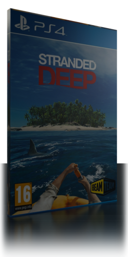
Stranded Deep maintained two separate codebases: one for consoles (PS4 and Xbox Series X|S) and
another for PC, each using different versions of Unity.
I worked on implementing co-op
multiplayer across both projects alongside a distributed team of roughly eight developers across
multiple continents.
After evaluating several networking solutions I selected Photon as
the networking layer. Core gameplay systems including player movement and animation, crafting,
object interaction, raft systems, island streaming, and achievements were adapted to multiplayer.
The entire world state had to synchronize from server to clients since the server could generate
custom worlds, and we also implemented join-in-progress functionality.
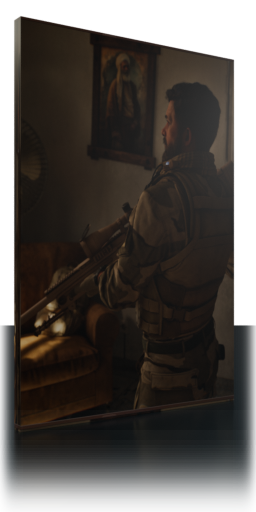
Center Mass was designed as a realistic sniper simulation where weapon interactions played a central role. Bolt-action weapons featured authentic bolt mechanics, scopes simulated parallax based on focus distance, players adjusted elevation and windage through scope turrets, and bullet physics aimed for high ballistic accuracy.
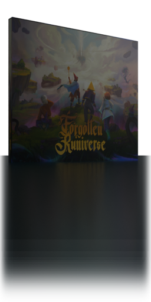
Forgotten Runiverse is a web-based fantasy MMO set in the Forgotten Runes Wizard's Cult universe.
The game uses Colyseus, Phaser, MongoDB, and Redis-synchronized servers handling
APIs, exploration rooms, and combat rooms.
My work focused primarily on performance and
stability improvements including WebSocket performance tuning, client-side optimizations such as
pathfinding and cell streaming, server-side optimizations, automated bot-based stress testing,
predictive client joins to reduce latency spikes, and mobile texture compression.